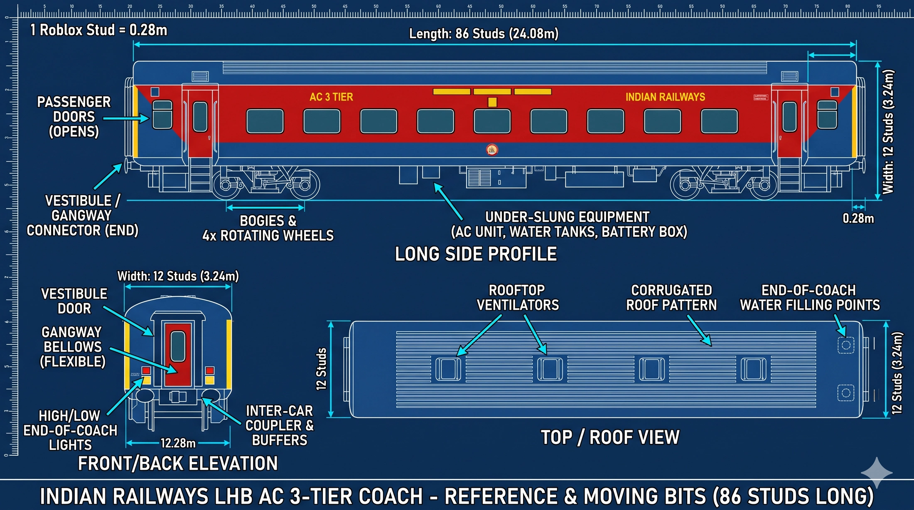
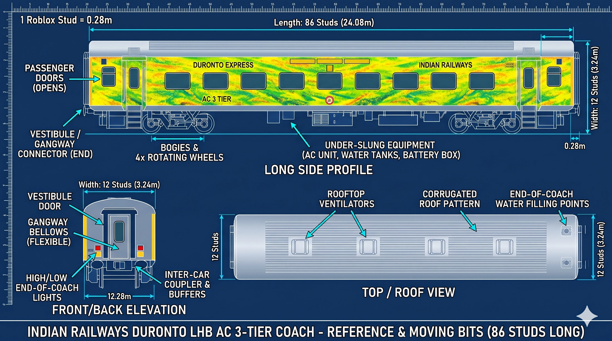
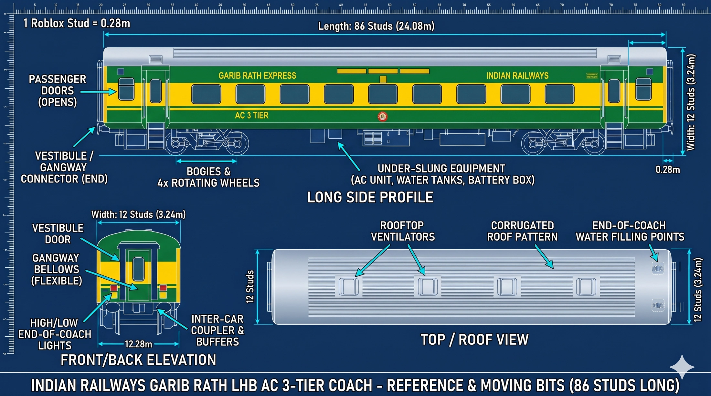
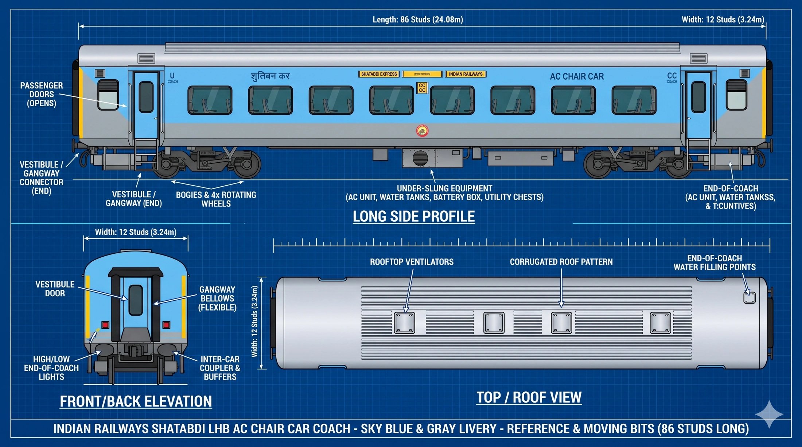

WAP-7
+ LHB 3-tier.
Official metric dimensions first. Roblox dimensions are calculated from the project conversion of 1 stud = 0.28 m. Your existing illustrations are visual build references, not certified engineering drawings.


Additional train references
Your added locomotive, coach-livery and cab images, grouped here for easy reference while building.





WAP-7 · dimensions & equipment
OFFICIAL SOURCE DATA RDSO confirms locomotive length and axle count; the CLW driver's manual covers the WAG-9/WAP-7 locomotive family. Stud values are conversions, not railway specifications.
| Feature | Real measurement | At 1 stud = 0.28 m |
|---|---|---|
| Length over buffers | 20,562 mm | 73.4357 studs |
| Overall width | 3,152 mm | 11.2571 studs |
| Max height, pantograph locked | 4,255 mm | 15.1964 studs |
| Bogie centres | 12,000 mm apart | 42.8571 studs |
| Axle spacing inside bogie | 1,850 + 1,850 mm | 6.6071 + 6.6071 studs |
| Wheel diameter, new / worn | 1,092 / 1,016 mm | 3.9000 / 3.6286 studs |
| Track gauge | 1,676 mm | 5.9857 studs |
| Axles / arrangement | 6 / Co-Co | Three two-axle bogies |
What exterior and mechanical parts need building?
- Two driver cabs, body shell, windows, doors, wipers, headlights, tail lights, horn and buffers/couplers.
- Three bogies, six wheelsets, axle boxes, suspension, brake discs and simplified traction motors.
- Roof equipment: two pantographs, main breaker, insulators, roof bus and antenna/equipment boxes.
- Underframe/machine-room equipment: transformer, converters, compressor, battery boxes and cooling air paths.
- For game play: animated wheels, working cab doors, lights, horn, pantograph toggle and sound zones.
WAP-7 · cab interior guide
The cab needs a driving desk, display, controller handles, brake valves, driver seat, windscreens and wipers. This is a functional placement sketch; use the CLW manual layout drawings for exact panel positions and fit.
LHB AC 3-tier · envelope + layout
OFFICIAL SOURCE DATA Standard LHB AC envelope. Confirm the selected coach subtype because production variants and fittings can differ.
| Feature | Real measurement | At 1 stud = 0.28 m |
|---|---|---|
| Length over body | 23,540 mm | 84.0714 studs |
| Length over CBC/couplers | 24,000 mm | 85.7143 studs |
| Maximum width over body | 3,240 mm | 11.5714 studs |
| Height above rail level | 4,039 mm | 14.4250 studs |
| Floor above rail level | 1,320 mm (reference value) | 4.7143 studs |
| Bogie wheelbase | 2,560 mm | 9.1429 studs |
| Wheel diameter, new | 915 mm | 3.2679 studs |
| AC 3-tier capacity | 72 berths (variant dependent) | interior arrangement |
Exterior parts for each LHB coach
- Coach body, roof corrugation and vents, end walls, vestibule/gangway and inter-car coupler/CBC.
- Two bogies/four axles, wheels, suspension, under-slung AC units, water tanks, batteries and brake equipment.
- Passenger doors and steps, windows, emergency markings, end lights, route board and coach number.
- Interior: three-tier berth bays, side berths, aisle, lighting, fans, luggage racks, toilets and washbasins, depending on selected subtype.
Consist size
One WAP-7 + 22 LHB coaches (over couplers) is approximately 548.562 m overall, or 1,959.15 studs under the project conversion.
Sources: RDSO locomotive specification · RDSO LHB coach specification.